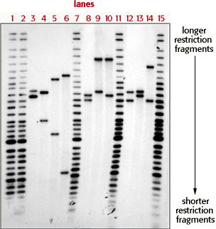

|  |
Autorads are x-ray films with dark bands representing RFLP markers. The bands are found in lanes, and each lane in this autorad contains DNA fragments from a different source. In the autorad to the left, the tops of the 15 lanes are numbered in red. Bands containing longer fragments of DNA are toward the top of the autorad and bands containing shorter fragments are toward the bottom. This is where the "Length Polymorphism" of RFLP is important; Because different individuals will have many different lengths of DNA possible at the location of an RFLP marker, different people will have bands at different places. |


The Biology Project
University of Arizona
Tuesday, August 20, 1996
Contact the Development Team
http://www.biology.arizona.edu
All contents copyright © 1996. All rights reserved.